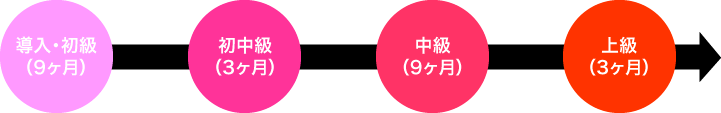

正規コース（定員480名）
現在海外に在住の方が留学ビザを取得して日本で勉強する場合はこのコースに申し込んでください。
入学時期は1月・4月・7月・10月の年4回で、それぞれ半年前くらいから手続きの準備が必要です。
最長2年の在籍が可能なコースは、大学を目指す方に最適です。
コース概要と申請締め切り日
| 4月入学（大学進学24ヶ月コース） | 前年の11月15日締切 |
|---|---|
| 7月入学（大学進学21ヶ月コース） | 同年の2月15日締切 |
| 10月入学（大学進学18ヶ月コース） | 同年の5月15日締切 |
| 1月入学（大学進学15ヶ月コース） | 前年の9月15日締切 |
※締め切り日については目安です。
正規コースの流れ


正規コースの時間割
| 午前 | 午後 | |
|---|---|---|
| 1限目 | 9：00～9：45 | 13：30～14：15 |
| 2限目 | 9：45～10：30 | 14：15～15：00 |
| 3限目 | 10：50～11：35 | 15：20～16：05 |
| 4限目 | 11：35～12：20 | 16：05～16：50 |
※授業は午前または午後のいずれかです。
※授業時間は、クラスによって決まります。